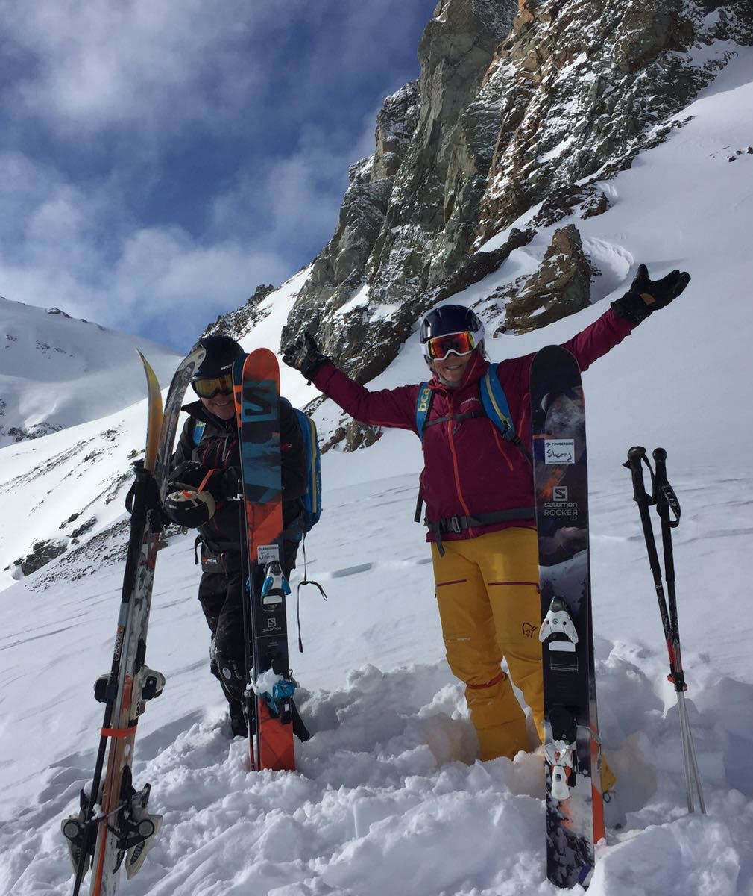

Founder, Owner & Guide
Jerry Hance
For decades, Jerry has been sharing his love for the mountains with his guests and bringing their dreams to life. Jerry is an American Association certified instructor. He is also a certified Wilderness First Responder and can boast a spotless safety record. Jerry has been a helicopter skiing avalanche forecaster & lead guide in Alaska since 1992 and in Chile/Argentina since 2009

A Brief History
Jerry first got into this business by going up to Valdez Alaska one of the first years they had heli-skiing. He was the first person to start carrying a rope for the glacier travel. After a week of Heliskiing, the owner of the Tsaina Lodge, in Valdez Alaska, asked Jerry to guide his next clients, who were the movie crew for Warren Miller. From then on, Jerry started his own heli-skiing business and he now guides in Alaska and Chile.